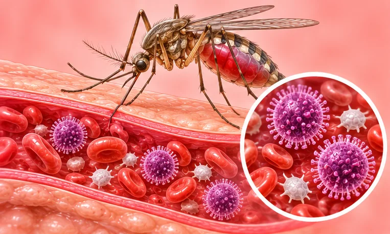

感染
69 种疾病与症状
 丝虫病
丝虫病 乙型流感
乙型流感- 传染性单核细胞增多症
 伤寒
伤寒
出血热- 华支睾吸虫病
- 厌氧菌感染
- 姜片虫病
- 布鲁氏菌病
- 弓形虫病
- 弓蛔虫病
- 念珠菌病
- 恙虫病
- 感染
 支气管结核
支气管结核- 放线菌病
- 斑疹伤寒
- 新型冠状病毒肺炎
- 柯萨奇病毒感染
- 毛霉病
 水痘
水痘- 活动性肺结核
- 流感病毒肺炎
- 流行性感冒
- 流行性脑脊髓膜炎
- 流行性腮腺炎
- 淋巴结结核
- 猫抓病
- 甲型H1N1流感
- 疟疾
- 病毒性发烧
- 病毒性感染
- 病毒感染
- 登革热
- 白喉
- 百日咳
- 真菌感染
- 空洞型肺结核
- 细菌感染
- 结核性胸膜炎
- 结核性脑膜炎
- 结核性腹膜炎
- 结核病
- 绦虫病
- 继发性肺结核
- 肠结核
- 肺结核
- 肾结核
- 胆道蛔虫病
- 胸壁结核
- 脊柱结核
- 脑囊虫病
- 脑血吸虫病
- 膝关节结核
- 蛔虫病
- 蛲虫病
- 血吸虫病
- 诺如病毒感染性腹泻
- 钩端螺旋体病
- 钩虫病
- 链球菌感染
- 阿米巴肠病
- 陈旧性肺结核
- 霍乱
- 颈部淋巴结结核
- 风疹
- 骨结核
- 髋关节结核
- 麻疹